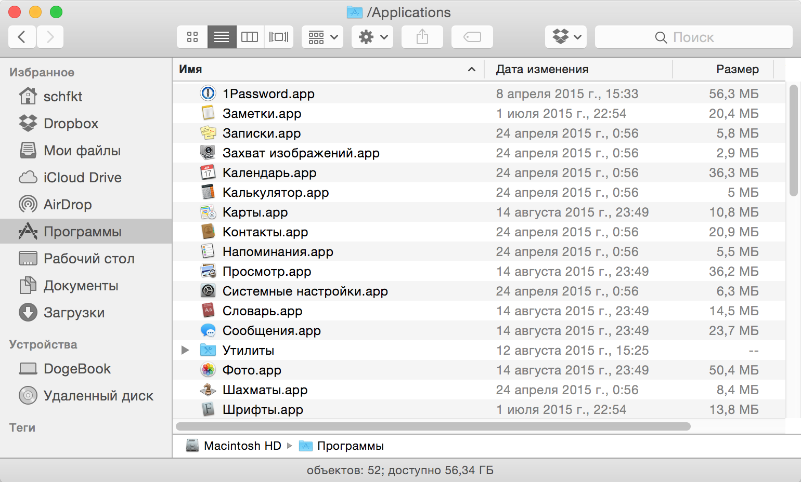
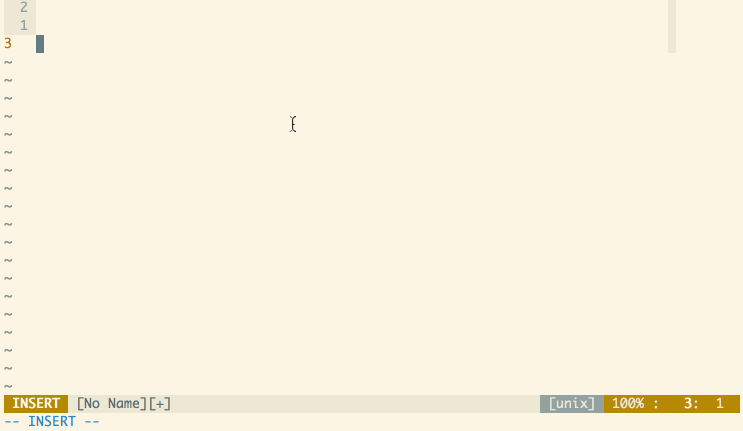
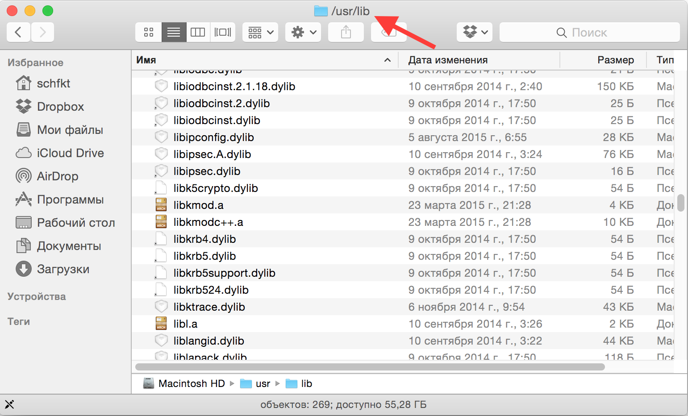
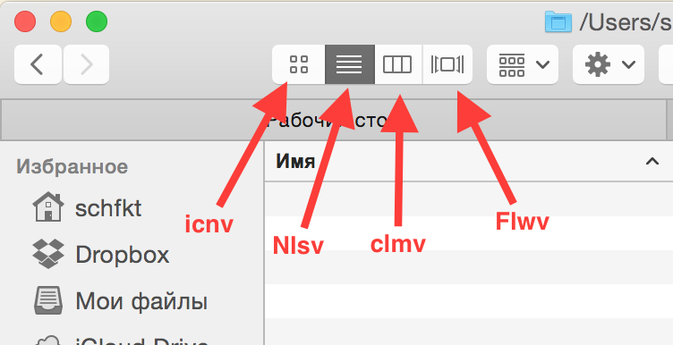

Как исправить говна в OS X, перестать беспокоиться и начать жить
По-умолчанию, в OS X (подразумевается Yosemite) присутствуют некоторые особые “фичи”, которые немного мешают жить. Например, поехавший скролл, который появляется только тогда, когда скроллишь. Если зажать какую-нибудь клавишу (n, k и т.д.), то вылезает какое-то меню около курсора. Это вместо того, чтобы просто непрерывно вводить этот символ в поле ввода. Список можно продолжать до бесконечности. Хорошо хоть, что все эти “фичи” можно исправить. Чему данный пост и посвящён.
Возвращаем на место скроллбар
Для этого нужно пульнуть в терминале следующую команду:
defaults write NSGlobalDomain AppleShowScrollBars -string "Always"Результат, правда, применится не сразу ко всем приложениям, а только к тем, которые будут запущены после выполнения команды. Или это мне так показалось. В любом случае, после рестарта OS X скроллбар будет везде и всегда виден. Пример:

Возможные значения у этой опции следующие:
- WhenScrolling
- Automatic
- Always
Так что, при необходимости, можно всё вернуть как было.
Включаем повтор клавиш
Собственно, команда для включения:
defaults write NSGlobalDomain ApplePressAndHoldEnabled -bool falseТакже можно задать скорость повтора:
defaults write NSGlobalDomain KeyRepeat -int 2Если указать 0, то повтор будет уж очень быстрый. Я поэкспериментировал и подобрал значение 2. С ним выглядит оно так:

Исправляем рендеринг шрифтов на внешних дисплеях
Кровь заструилась из глаз моих, когда я первый раз подключил внешний монитор к макбуку. Шрифты были настолько адово шероховатые, что работать было совсем невозможно. Решилась проблема при помощи следующей настройки:
defaults write NSGlobalDomain AppleFontSmoothing -int 2Отображение абсолютного пути к текущей папке в заголовке окна
Включается следующей командой:
defaults write com.apple.finder _FXShowPosixPathInTitle -bool trueРезультат:

Задаём вид отображения по-умолчанию
defaults write com.apple.finder FXPreferredViewStyle -string "Nlsv"В качестве значения можно указать одну из следующих строк:
- “icnv” - значки
- “Nlsv” - список
- “clmv” - колонки
- “Flwv” - обложка
Чтобы было понятно, какой режим что из себя представляет, на следующей картинке можно глянуть, какая из кнопок в UI Finder’а включает какой режим:

Отключаем предупреждение при смене расширения у файла
defaults write com.apple.finder FXEnableExtensionChangeWarning -bool falseВключаем отображение расширения у всех файлов
defaults write NSGlobalDomain AppleShowAllExtensions -bool trueОтключаем прозрачность у элементов интерфейса (menu bar и прочее)
Совсем бесполезная хрень, которая к тому же только попусту напрягает графический адаптер. Отключаем:
defaults write com.apple.universalaccess reduceTransparency -bool trueУбираем тени на скриншотах
Тоже фигня бесполезная:
defaults write com.apple.screencapture disable-shadow -bool trueОтключаем переход назад по истории в хроме при помощи свайпа влево
Иногда оно может быть удобно. Но обычно я этот жест делаю случайно. Выключаем:
defaults write com.google.Chrome AppleEnableSwipeNavigateWithScrolls -bool falseНебольшие фиксы для Time Machine
Не нужно предлагать использовать для бэкапов внешние диски:
defaults write com.apple.TimeMachine DoNotOfferNewDisksForBackup -bool trueВыключаем локальные бэкапы (лол, apple, какой вообще в них смысл?). Да и место только зря занимает:
sudo tmutil disablelocalЧаще проверяем наличие обновлений
В данном случае, каждый день:
defaults write com.apple.SoftwareUpdate ScheduleFrequency -int 1Улучшаем качество звука в blueetoth гарнитурах / наушниках
Сам пока что не проверял, ибо наушники поломались:
defaults write com.apple.BluetoothAudioAgent "Apple Bitpool Min (editable)" -int 40Полезные ссылки
Почти все эти команды я нашёл в скриптах, расположенных по следующим ссылкам:
- https://github.com/mathiasbynens/dotfiles/blob/master/.osx
- https://gist.github.com/brandonb927/3195465
Там же есть и множество других советов. Которые сюда не попали, ибо я просто не стал их использовать.